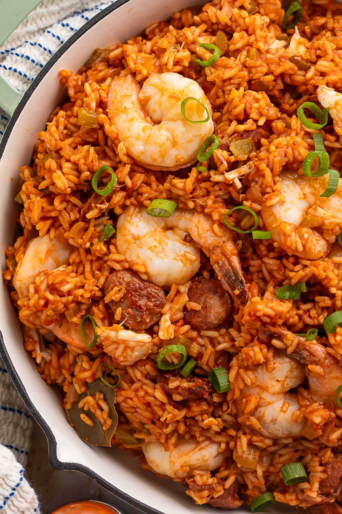
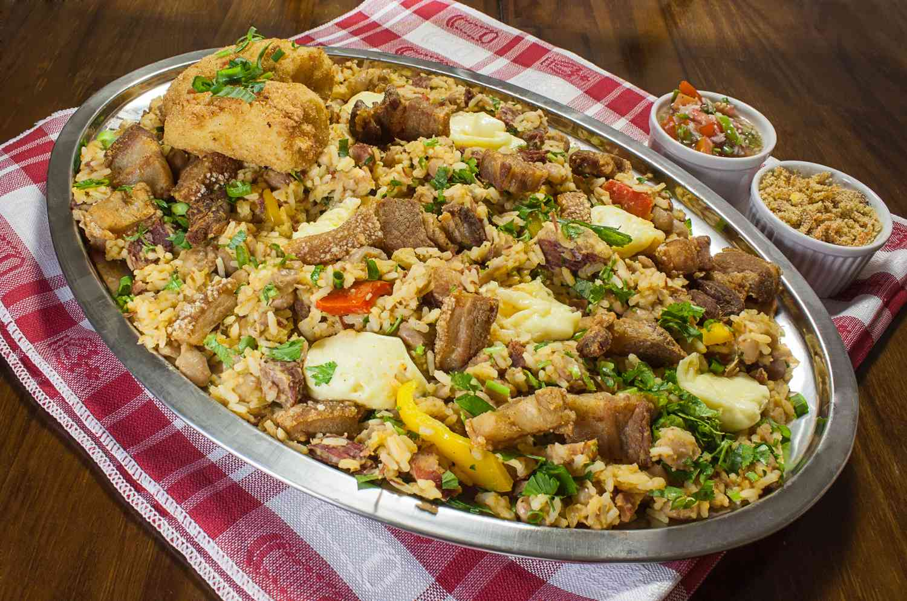
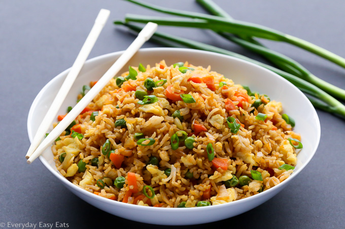

Jambalaya
Baião de dois
Fried Rice
Jollof
Explore the World of Rice

Jambalaya
Jambalaya is a savory rice dish fusing together African, Spanish, and French influences

Baião de dois
Baião de dois consists of a preparation of rice and beans

Fried Rice
Fried rice is a dish of cooked rice that has been stir-fried and mixed with other ingredients.
Jollof
Jollof is typically made with long-grain rice, tomatoes, chilis, onions, spices, and more.